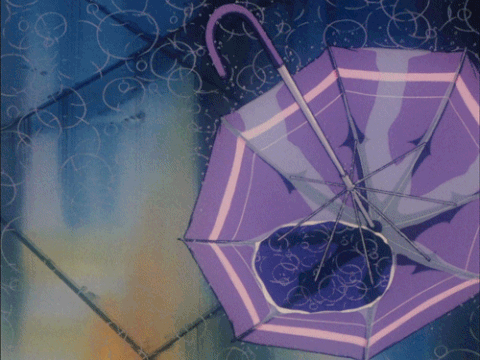
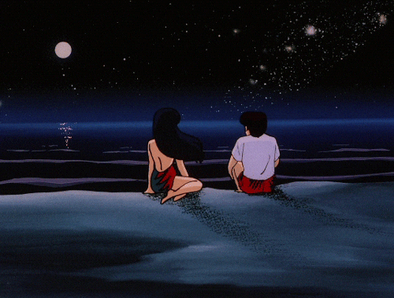

♡오늘의 시 한스푼 ♡ (21.09.01)

눈을 다 감고도
갈 수 있느냐고
비탈길이 나에게 물었다
나는 말했다
두 발 없이도
아니, 길이 없어도
나 그대에게 갈 수 있다고
-김현태,첫사랑
갈 수 있느냐고
비탈길이 나에게 물었다
나는 말했다
두 발 없이도
아니, 길이 없어도
나 그대에게 갈 수 있다고
-김현태,첫사랑
구르미달빛에 ,,,(21.09.07)
나와 보니 어느새 어둠, 달은 노랗고 예뻤ㄷr,,,
여자는 달을 보며 말했다
"오래 전 일본 소설가 하나가 쑥스러웠던지,
'i love you'를 오늘 달이 참 밝네요 라고 번역했대요"
남자는 귀엽다며 웃더니
"오늘 참 달이 밝네"라고 말했ㄷ r,,,
여자는 달을 보며 말했다
"오래 전 일본 소설가 하나가 쑥스러웠던지,
'i love you'를 오늘 달이 참 밝네요 라고 번역했대요"
남자는 귀엽다며 웃더니
"오늘 참 달이 밝네"라고 말했ㄷ r,,,
막걸리 한사바리 생각나는 밤,,,(21.09.22)

잠시 훔쳐온 불꽃이었지만
그 온기를 쬐고 있는 동안만은
세상 시름,,,두려움도 잊고
따뜻했었다
고맙다
네가 내게 해준 모든 것에 대해
주지 않은 것들에 대해서도
-최영미, 옛날의 불꽃
그 온기를 쬐고 있는 동안만은
세상 시름,,,두려움도 잊고
따뜻했었다
고맙다
네가 내게 해준 모든 것에 대해
주지 않은 것들에 대해서도
-최영미, 옛날의 불꽃